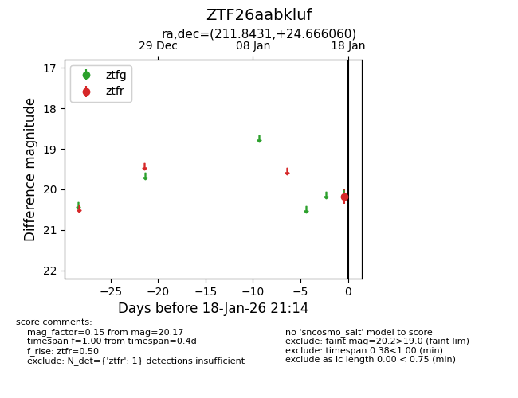
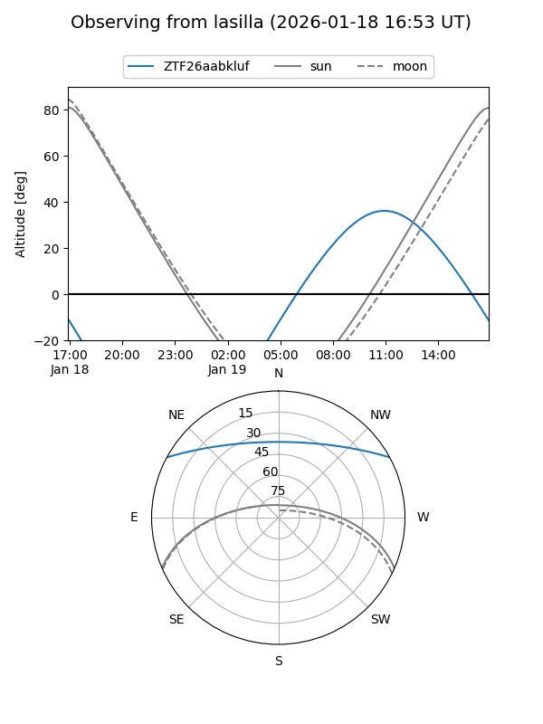
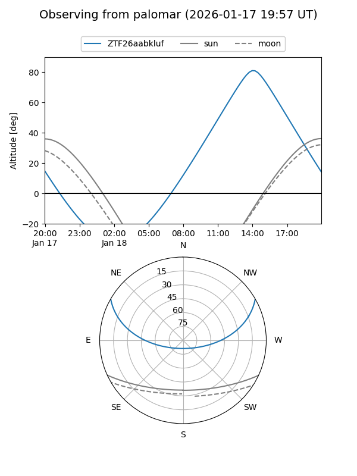

ZTF26aabkluf
Target ZTF26aabkluf at 2026-01-18 12:50
Aliases and brokers:
FINK: link
Lasair: link
ALeRCE: link
alt names
ZTF26aabkluf (ztf,fink_ztf)
Coordinates:
equatorial (ra, dec) = 211.8431,+24.66606
equatorial (HMS+DMS) = 14:07:22.35,+24:39:57.82
galactic (l, b) = (28.9799,+72.76324)
Flags:
Photometry:
last ztfr=20.17
1 ztfr detections
Lightcurve

Visibility


Additional plots